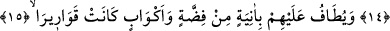

NE YANA BAKARSAN BAK
ULU BİR SALTANAT GÖRÜRSÜN
11. İşte bu yüzden Allah onları o günün fenalığından esirger; (yüzlerine)
parlaklık, (gönüllerine) sevinç verir.
12. Sabretmelerine karşılık onlara cenneti ve (cenetteki) ipekleri lütfeder.
13. Orada koltuklara kurulmuş olarak bulunurlar; ne yakıcı sıcak görülür orada,
ne de dondurucu soğuk.
14. (Cennet ağaçlarının) gölgeleri, üzerlerine sarkar; kolayca koparılabilen
meyveleri istifâdelerine sunulur.
15, 16. Yanlarında, gümüş kaplar ve billûr kâselerle, gümüş beyazlığında (billûr
gibi) şeffaf kupalarla dolaşılır ki, sâkiler bunu (cennet şarabını) ölçüsünce tâyin ve
takdir ederler.
17. Onlara orada bir kâseden içirilir ki (bu şarabın) karışımında zencefil vardır.
18. (Bu şarap) orada bir pınardandır ki adına Selsebîl denir.
19. O insanların etrafında öyle ölümsüz genç nedîmler dolaşır ki, onları
gördüğünde, etrafa saçılıp dağılmış inciler sanırsın.
20. Ne yana bakarsan bak, (yığınla) nimet ve ulu bir saltanat görürsün.
21. Üzerlerinde yeşil ipekten ince ve kalın elbiseler vardır; gümüş bilezikler
takınmışlardır. Rableri onlara tertemiz bir içki içirir.
22. (Onlara şöyle denir:) Bu, sizin için bir mükâfattır. Sizin gayretiniz karşılığını
bulmuştur.